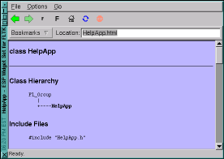

ESP |
Home |
Documentation |
Download |
FLTK
|  | NewsMarch 19, 2000 FileChooser and HelpDialog distributions merged into new ESP Widget Set 2.0 distribution. The new distribution includes "flsurf" (shown at left), a simple web browser for FLTK using the HelpApp widget. |
Copyright 1997-2000 by Easy Software Products. This software is provided under the terms of the GNU General Public License.